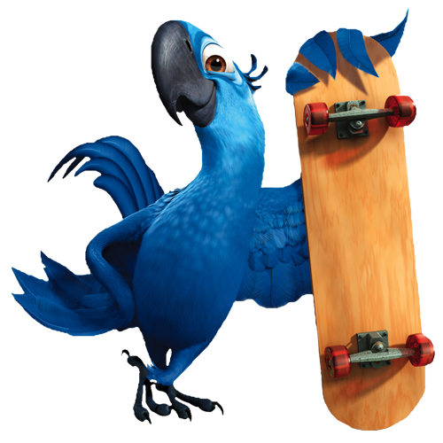
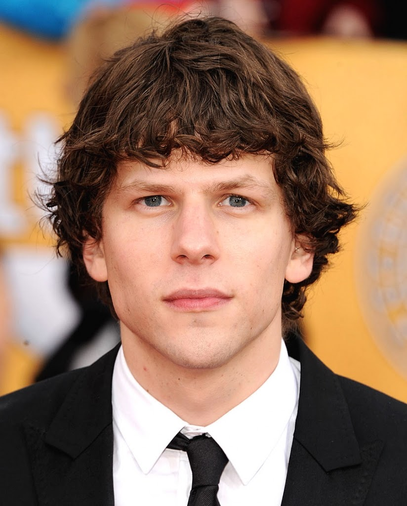

Rio 2
LIVRE. ; 102 minutos;
Direção Carlos Saldanha;
Título original: Rio 2;
Gênero:Animação, Aventura, Comédia;
Ano:2014;
País de origem:EUA
As araras Blu e Jade vivem felizes com seus filhos no Rio de Janeiro. Quando seus donos, Túlio e Linda, encontram pássaros de sua espécie na Amazônia, eles decidem partir para novas aventuras na Região Norte do país. Só que nem tudo é perfeito. Nigel, o velho inimigo dos dois, está de volta para se vingar.
Três anos após o sucesso de Rio (2011), Carlos Saldanha volta a brindar o espectador com mais uma aventura em terras brasileiras com Rio 2 Na segunda aventura, Blu, Jade e seus três filhos vão à Amazônia em busca de outros pássaros que podem ser de sua família após a descoberta de Túlio e Linda, que estão em expedição e descobrem a pena de uma arara azul na região. Ao mesmo tempo, Nigel, a cacatua que perdeu a capacidade de voar após os eventos do longa anterior, quer se vingar de Blu e conta com a ajuda da rã venenosa Gabi e do tamanduá Carlitos..
PERSONAGENS
Blu:O filme conta a história de Blu, uma arara-azul macho que é levado ao Rio para se acasalar com uma fêmea,Blu que ao nascer foi capturado na floresta do Rio de Janeiro e levado para a ilha de Minnesota, nos Estados Unidos. Lá foi criado por Linda, sua protetora, que cuidava muito bem da ave e tinha muito carinho pelo animal..

Dublador Americano: Jesse Eisenberg

Dublador Brasileiro: Gustavo Pereira
Jade:Ela é uma Ararinha Azul, previamente acreditada ser a última fêmea de sua espécie. É apresentada à Blu para que "salvem a espécie", porem ela está mais preocupada em fugir. Em Rio 2, mãe de três filhos, ela volta para casa na Amazônia e reencontra sua família perdida.